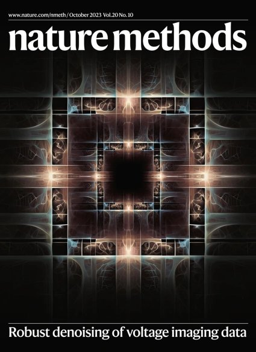

Denoising without losing fast neural dynamics.
SUPPORT uses spatial and temporal information to denoise voltage imaging recordings.
Nature Methods · 2023I am Seungjae Han, a postdoctoral fellow at KAIST. I develop computational methods for neuroscience, working on self-supervised learning, image reconstruction, and the analysis of neural recordings.
Learn MoreVision
My work brings together statistical estimation, machine learning, and fluorescence microscopy. The aim is to make neural activity measurements more reliable without requiring clean training images.
Read the Vision

Research
Research topics include voltage imaging denoising, calcium imaging analysis, and self-supervised processing on analogue hardware.
Learn MoreImpact
SUPPORT uses spatial and temporal information to denoise voltage imaging recordings.
Nature Methods · 2023A memristor-array platform combines video processing with self-calibration.
Nature Electronics · 2025